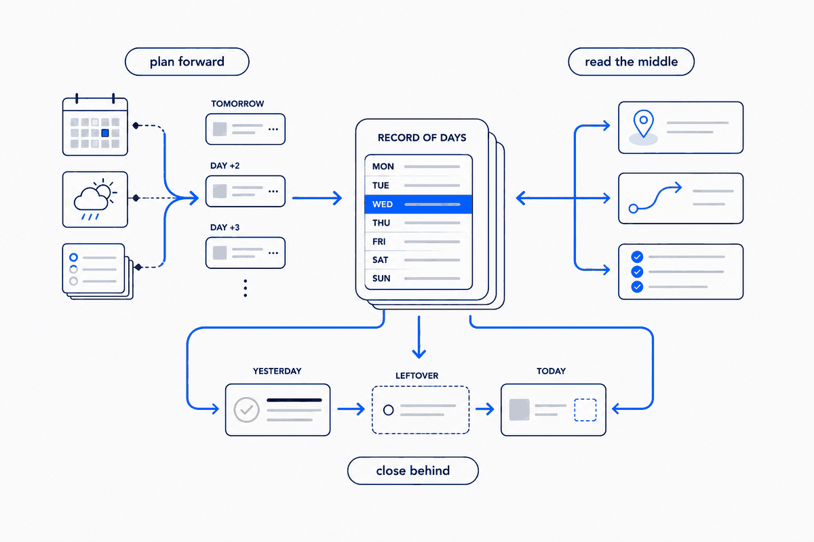
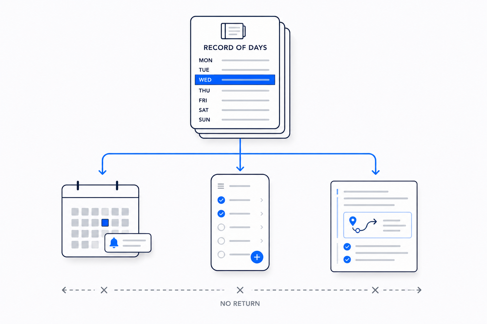

The trap of the blank planner
Most planning tools ask you to start from nothing. A blank week, a blank day, a cursor blinking where an intention is supposed to appear. So you type the same things you typed last week, forget the two you meant to carry over, and lose the appointment that was sitting in your calendar the whole time. The tool didn't help you plan; it gave you a nicer place to do the planning by hand.
I wanted the opposite. When I open a day that hasn't happened yet, I want it already half-written — the appointments pulled from my calendar, the weather I'll actually get, the tasks still open from yesterday, all sitting there before I've thought a single thought. Not because an AI is clever, but because the day can be derived. Everything needed to draft it already exists somewhere in my system. The blank planner is a failure of plumbing, not of willpower.
Three kinds of content, one loop
Once you stop treating a planner as a place to type and start treating it as a view over what you already know, the work splits cleanly into three moves — and each one is something a model can do for you.
Plan forward. The days ahead get drafted from what the system already holds: the calendar for fixed appointments, a weather forecast for the real conditions, and the open tasks that haven't been closed. A planned day isn't empty — it's a first draft the model assembles, that I then adjust. I'm editing, not conjuring.
Close behind. When a day ends, it gets sealed: marked done, given a short summary, and anything still unfinished is carried into the next active day so nothing quietly falls on the floor. The record stops being a pile of half-notes and becomes an actual history.
Read the middle. What actually happened flows back in — where I was, what I moved, which tasks I finished — read out of the systems that already recorded it, and written into the day as a plain, factual layer under my own words.
Plan forward, close behind, read the middle. It's a loop, and it runs every day and every week. The model does the fetching, the drafting, the summarising. But notice what makes all three possible.

Why the AI can only do this if the structure is there
Here's the part the tool demos never say out loud. An AI can draft my week only because there is one place where every dated thing in my life lives — a single time-spine, one folder per day, the same shape every time. It can read back my open tasks only because a task is a real object with a state, not a checkbox buried in prose. It can pull the weather and the calendar into the right day only because there's an unambiguous slot for them to land in.
Take the structure away and none of it works. Point the same model at a shoebox of loose notes and it has nothing to plan from, nothing to close, nothing to read into. It will happily generate a plausible-looking week — and it will be fiction, because there was no source of truth for it to be true to. The intelligence isn't what makes this reliable. The structure is. The model is just the thing that moves data along rails the structure laid down.
This is the whole thesis in one small domain: the magic isn't in the model, it's in the structure you give it. Continuous planning is a clean example precisely because it's unglamorous. No clever prompt saves you here. A calendar-spine and a typed task do.
One source, one direction
The move that keeps it honest is the same one behind every system I trust: the source of truth is the record itself, and everything else flows out of it in one direction, never back.
The calendar shows my dated tasks; my tasks are not edited inside the calendar. A day's summary is written into the day; the summary doesn't become a second, competing version of what happened. When I read my open actions into a planned day, I'm reading a view — the task lives in one place, and it's ticked off in one place, never in two systems that then disagree. The moment you let a mirror write back to its source, you have two truths and a slow, grinding drift between them. One direction of flow is what stops that before it starts. It's the same rule as a brain that publishes itself — the site is a projection of the database, never a second copy that edits back — applied to time instead of publishing.

The honest limits
This is not automation you walk away from. The model drafts; I still decide. A planned week is a starting position, not a verdict — plans change, the boat trip moves to a calmer day, an appointment I didn't expect lands mid-week and the draft was wrong. That's fine. A first draft I adjust beats a blank page I dread, and adjusting is not failing.
Two caveats I hold onto. First, the read-back layer reports what the data says, and data can be wrong or missing — a day with no photos isn't a day I stayed home, it's a day I didn't take photos. The system says so plainly rather than inventing a story, and I fill the gap myself. Second, none of this runs itself yet; today a model does it when I ask, on rails I maintain, not on a timer in the background. The structure earns the automation later. It doesn't grant it for free.
And I'd rather it stay that way a while. Planning is one of the places where doing a little of the work by hand keeps me honest about the week I'm actually choosing. The system's job isn't to plan my life for me. It's to make sure I never start from a blank page, never lose an open thread, and never keep two versions of the truth. The days ahead arrive already drafted; the days behind close themselves; the middle reads itself back.
A week that plans itself. The structure does the work; the planner is only its surface.